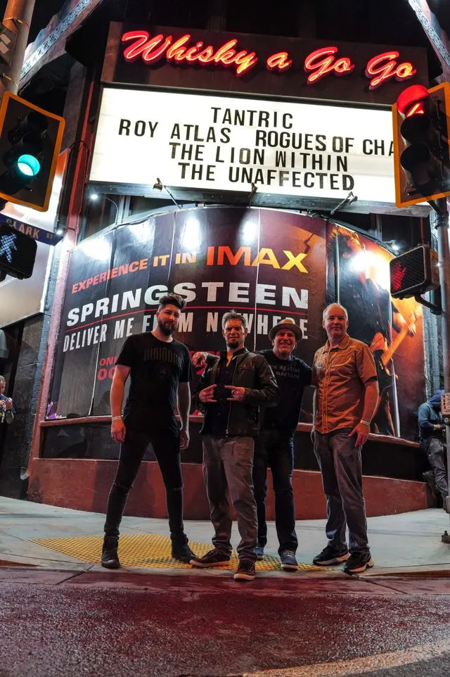
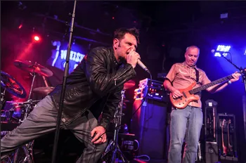
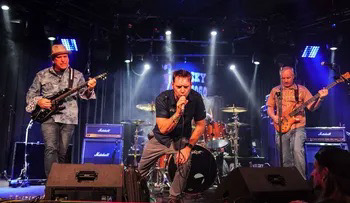

The Unaffected
The Unaffected is a high-energy musical collective that fearlessly blends the raw power of hard rock and metal with the catchy melodies of pop rock, the soulful depths of blues, and the rebellious spirit of grunge. Born from a shared passion for diverse sounds, the band has cultivated a unique sonic identity that defies categorization.
Genres: Rock, Hard Rock, Metal-leaning Alternative
Based in: Salt Lake City, Utah
Based in: Salt Lake City, Utah
Original Music & Live Video
Lead with your strongest live clip, then list your standout tracks underneath.
- 1. Add Your Top Track Title
- 2. Add Your Second Track Title
- 3. Add Your Third Track Title
- 4. Add Your Fourth Track Title
- 5. Add Your Fifth Track Title
Press Photos




Logos
Add official band logos here as PNG/SVG files for promoters and media kits.
Press / Reviews
“Add your strongest press quote here to instantly establish credibility with promoters and media.”
“Use this section for audience or venue testimonials that capture the live impact of your show.”
Contact Us
Booking: Add booking email
Management: Add manager name/email
Phone: Add contact number
Management: Add manager name/email
Phone: Add contact number
EPK URL:
dbaileyfam.github.io/theunaffectedepk
Replace placeholders above when ready. This page is now structured for easy promoter and press sharing.